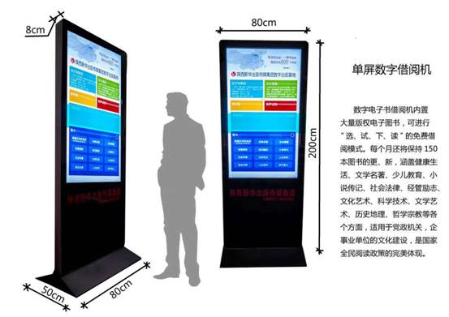
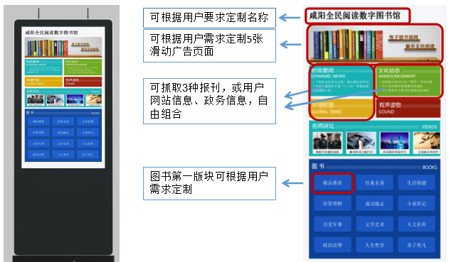
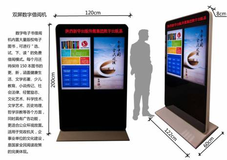
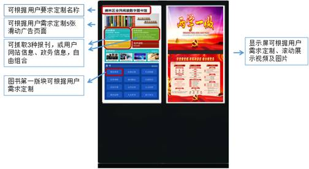

（一）移动数字图书馆简介
移动数字图书馆作为全民阅读机的全新形态，向社会公众提供24小时不间断的文化服务，是专注于数字阅读的文化传播平台。
与传统图书馆/阅览室相比，移动数字图书馆具有诸多特点，它能够为客户提供免费的图、文、视、听等全方位的数字信息文化服务，便于人们近距离、经常性、便捷地获取数字信息。
每台设备均提供数量众多、种类多样的电子图书、有声读物、视频、报纸、期刊等数字资源及海量云资源。设备连接wifi可在线阅读书籍、浏览报刊、听音频、看视频或通过手机扫描二维码将书籍下载到手中阅读，无需归还，图书可以在手机终身保存，无限期使用。数字图书没有副本限制，每本图书可供上万人下载阅读。使用手机随时扫描，随时阅读，无需等待。
移动数字图书馆硬件配置参数如下：
CPU：四核，主频1.6G
运行内存： 2G DDR3
内置存储： ROM FLASH 8G
解码分辨率：最高支持1080P
操作系统：Android 4.2.2
网络：支持以太网和 WiFi
USB接口：2个
以太网络接口：1个，支持10M/100M自适应以太网
喇叭：5W×2
安装方式：落地式
机身尺寸：1814mm*691mm*70mm（含底座465mm）
电源输入及功耗：110-240VAC, 50/60HZ , 70W
移动数字图书馆有单、双屏两种形式。单屏版提供数字资源、个性化定制及资源定期更新服务；双屏版除了具有与单屏版相同的功能并提供定期更新服务外，显示屏（右侧）还可以展示图片及视频，能够很好应用于文化展示及主题宣传。具体参数及功能如下所述。
1．移动数字图书馆_单屏版


图1移动数字图书馆_单屏版个性化定制示意图
（1）设备基本参数：55寸LED液晶屏；对比度3000:1；分辨率1920×1080；内置喇叭
（2）设备自带WI-FI：设备内置WI-FI可支持资源下载。连网状态下，用户下载资源无需消耗个人手机流量。
（3）阅听资源下载：设备连网状态下，用户可阅读设备内置的3000册图书；无网络连接时，读者可以通过专属的手机App扫描二维码下载图书，App另配有3000册在线图书。设备另提供1000集有声书，200集视频及多种报纸（新京报、经济观察报、南方周末等）资源在线使用。
（4）资源更新：每月第一周后台更新150本图书，第一年免费更新，从第二年开始收取服务费Y万/年。
（5）读报功能：设备可选择并抓取多种报刊或网站新闻并呈现于屏幕前端，供用户了解新鲜资讯。
（6）辅助下载应用：通过专属的手机APP扫描各内容资源对应的二维码即可实现下载。支持安卓系统、IOS系统。
（7）设备界面功能：图书分类详细，采用封面图片或书名列表的方式展示，方便用户查找、浏览内容资源。支持EPUB、TXT、PDF等格式。支持在线屏幕阅读、试听。
（8）个性化定制：屏显上方主标题及LOGO可根据客户需求定制；屏显图片可定制为客户形象图片；屏显中部四个版块根据客户需求定制为报刊新闻抓取、客户自有网站信息抓取、客户公告信息；可根据客户需求添加政务信息公开栏；屏保图片可设置为客户形象图片或客户要求的其他图片。


图2移动数字图书馆_单屏版个性化定制示意图
（1）触摸屏（左侧）规格参数：
屏幕尺寸：42寸
识别原理：红外识别
多点触摸：支持真6点触摸
抗光干扰：光线,以各种角度照射屏幕均可正常使用
触摸方式：手指，笔(任何直径>5mm的不透光物体)
触摸精度：90%以上的触摸区域为±2mm
通讯方式：全速USB
书写屏表面硬度：物理刚化莫氏7级防爆
触摸使用寿命：使用寿命达80000小时以上
（2）显示屏（右侧）规格参数：
屏幕尺寸：42寸
背光类型：LED
响应时间：5ms
色度：16.7M
亮度：350cd/m2
对比度：3000:1
屏体分辨率：1920×1080
视角：89/89/89/89 (L/R/U/D)
有效显示面积：930.24mm (H) x 523.26mm (V)
（3）设备自带WI-FI：设备内置WI-FI可支持资源下载。连网状态下，用户下载资源无需消耗个人手机流量。
（4）阅听资源下载：设备连网状态下，用户可阅读设备内置的3000册图书；无网络连接时，读者可以通过专属的手机App扫描二维码下载图书，App另配有3000册在线图书。设备另提供1000集有声书，200集视频及多种报纸（新京报、经济观察报、南方周末等）资源在线使用。
（5）资源更新：每月第一周后台更新150本图书，第一年免费更新，从第二年开始收取服务费Y万/年。
（6）读报功能：设备可选择并抓取多种报刊或网站新闻并呈现于屏幕前端，供用户了解新鲜资讯。
（7）辅助下载应用：通过专属的手机APP扫描各内容资源对应的二维码即可实现下载。支持安卓系统、IOS系统。
（8）设备界面功能：图书分类详细，采用封面图片或书名列表的方式展示，方便用户查找、浏览内容资源。支持EPUB、TXT、PDF等格式。支持在线屏幕阅读、试听。
（9）个性化定制：触摸屏（左侧，下同）上方主标题及LOGO可根据客户需求定制；触摸屏屏显图片可定制为客户形象图片；触摸屏屏显中部四个版块根据客户需求定制为报刊新闻抓取、客户自有网站信息抓取、客户公告信息；可根据客户需求添加政务信息公开栏；触摸屏屏保图片可设置为客户形象图片或客户要求的其他图片。显示屏（右侧）可播放视频、并可展示6页滚动的客户形象图片或客户要求的其他图片。